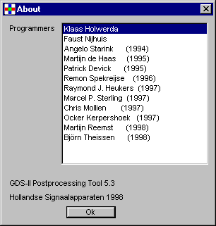

With the Help menu help with the program can be requested. It's also
possible to register the files Boolean can handle.
This item puts the index page from the help files into a browser.
It first checks for an open browser (Netscape or Internet Explorer).
If there's none, it opens the default browser.
Click this menu-item to register GDS-II, Key and
process files. It adds information to the Windows registry.
After this, you can double-click files, in for example Windows Explorer,
to open them in an (already opened) GDS-II Postprocessing Tool.
If there's none open, it first starts the program.
NOTE: This function is not avaible with UNIX.
This shows information about the programmers:
